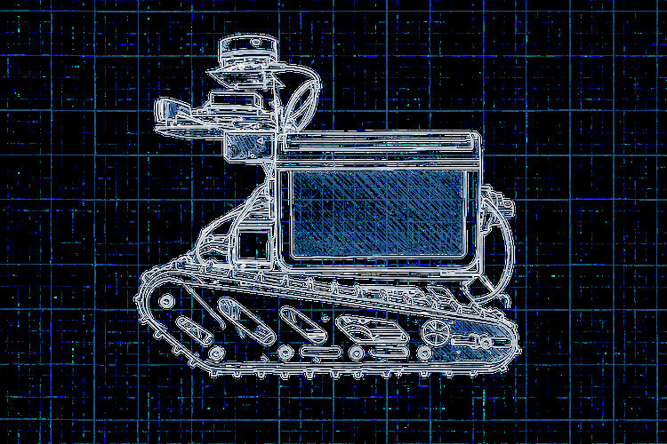
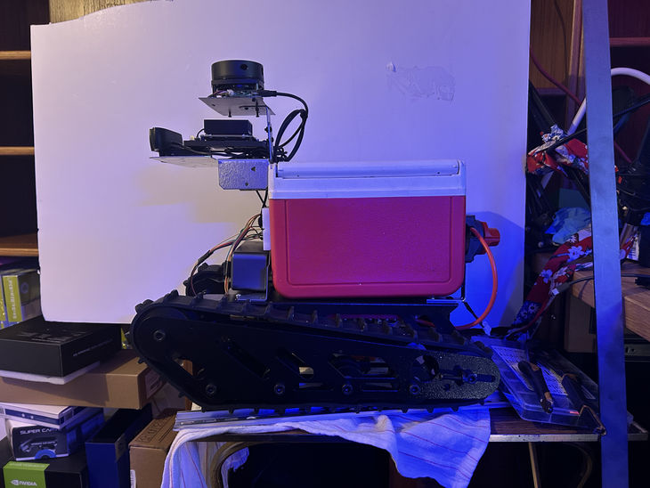

AIDAN MARK / PERSONAL FILES EDMONTON, AB / EST. ON THE WEB
A / M : : CAMPUS DELIVERY ROBOT
[ home / projects / resume / e-mail ] * no scripts here *
[ << project drawer ] [ < previous ] [ next > ]
FILE 02 / 08 : : ROBOTICS / HARDWARE
[ LiDAR ] --> [ Jetson ] --> [ Teensy ] --> wheels
solo build / ROS2, C++, Python, Jetson Orin Nano, Teensy 4.1
An indoor delivery robot that maps its surroundings and drives to destinations. High-level navigation runs on a Jetson; a Teensy handles the motor hardware. I wrote firmware and ROS2 nodes for serial communication, sensor integration, odometry, PID control, and LiDAR SLAM.
Hardware test: Mapped the second floor at MacEwan University.

The original robot drawing on a blue grid.

The real delivery robot on the workbench.
More: all projects / technical background / email Aidan
* * * * *
home / all the projects / résumé / write me
Last edited: 22 October 2026.
Made from ordinary HTML, old-fashioned CSS, and original project pictures. © Aidan Mark.